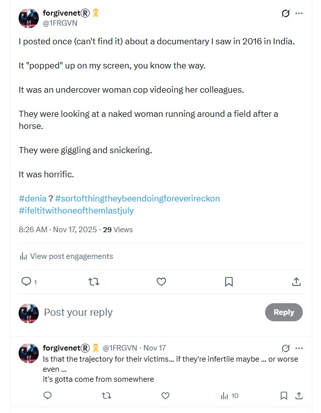
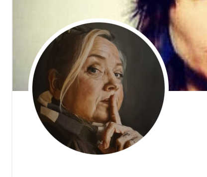

El Pais ignored the scoop of the millennia, and their servers were controlled by the porn-gangs and so all my emails were blocked and never reached the journalist I had spoken to.
@KimKarlstein, and I have to wonder if they’re goading the police with this name.
I post about how we delivered the bomb just before I go to class.



@iamloiskay telling us that local sedating-rapists were entering my apartment EVERY SINGLE DAY at that time?